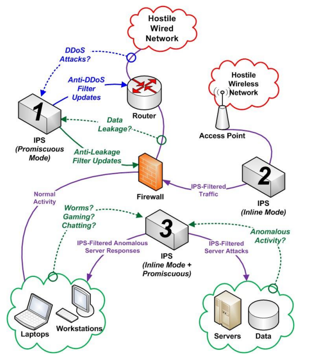

The scope of this PP-Module is to describe the security functionality of an Intrusion Prevention System
(IPS) in terms of [CC] and to define functional and assurance requirements for such products. This PP-Module is intended for use with the following Base-PPs:
collaborative Protection Profile for Network Devices, Version 3.0E (NDcPP or CPP_ND_V3.0E)
This Base-PP is valid because a device that implements IPS is a specific type of network device, and there is nothing about the implementation of IPS that would prevent any of the security capabilities defined by the Base-PP from being satisfied.
A TOE that conforms to a PP-Configuration containing this PP-Module may be a ‘Distributed TOE’ as defined in the NDcPP. For example, the TOE could have distributed ‘sensor’ components monitoring various logically separated networks, each of which reports to a centralized ‘manager’ component for
configuration of IPS policies and aggregation of IPS data.
1.2 Terms
The following sections list Common Criteria and technology terms used in this document.
1.2.1 Common Criteria Terms
Assurance
Grounds for confidence that a TOE meets the SFRs [CC].
Base Protection Profile (Base-PP)
Protection Profile used as a basis to build a PP-Configuration.
Collaborative Protection Profile (cPP)
A Protection Profile developed by
international technical communities and approved by multiple schemes.
Common Criteria (CC)
Common Criteria for Information Technology Security Evaluation (International Standard ISO/IEC 15408).
Common Criteria Testing Laboratory
Within the context of the Common Criteria Evaluation and Validation Scheme (CCEVS), an IT security evaluation facility
accredited by the National Voluntary Laboratory Accreditation Program (NVLAP) and approved by the NIAP Validation Body to conduct Common Criteria-based evaluations.
Common Evaluation Methodology (CEM)
Common Evaluation Methodology for Information Technology Security Evaluation.
Distributed TOE
A TOE composed of multiple components operating as a logical whole.
Functional Package (FP)
A document that collects SFRs for a particular protocol, technology,
or functionality.
Operational Environment (OE)
Hardware and software that are outside the TOE boundary that support the TOE functionality and security policy.
Protection Profile (PP)
An implementation-independent set of security requirements for a category of products.
A comprehensive set of security requirements for a product type that consists of at least one Base-PP and at least one PP-Module.
Protection Profile Module (PP-Module)
An implementation-independent statement of security needs for a TOE type complementary to one or more Base-PPs.
Security Assurance Requirement (SAR)
A requirement to assure the security of the TOE.
Security Functional Requirement (SFR)
A requirement for security enforcement by the TOE.
Security Target (ST)
A set of implementation-dependent security requirements for a specific product.
Target of Evaluation (TOE)
The product under evaluation.
TOE Security Functionality (TSF)
The security functionality of the product under evaluation.
TOE Summary Specification (TSS)
A description of how a TOE satisfies the SFRs in an ST.
1.2.2 Technical Terms
Anomaly / Anomalous (network traffic)
Traffic that does not fit into a defined baseline and is therefore unexpected or atypical traffic.
Anomalous traffic is not necessarily dangerous, and does not necessarily indicate any threat to the monitored network.
Baseline / Base-lining (network traffic)
Defining what is to be considered expected or typical network traffic on a monitored
network. A traffic baseline does not indicate that all traffic that matches the baseline
is safe, or that the traffic is not a potential threat to the monitored network. For
example: traffic that matches a baseline can still match a list of known-bad IP
addresses; or can match signatures of known threats.
Flooding
Causing an excessive amount of traffic on an IP subnet or targeted against a specific IP address.
IPS policy
Any set of rules for traffic analysis, traffic blocking, signature detection, and/or anomaly detection. Many IPS policies could be defined and stored on the TOE, but an IPS policy will not have any affect unless is applied to (made active on) one or more IPS interfaces.
Inline mode
The deployment of the TOE (or TOE component) such that monitored network traffic must flow across the TOE,
thus providing the TOE with the opportunity to block the traffic.
Normalization (of network traffic)
Filtering of network traffic such that only the useful packets/fragments are allowed through to the destination. Normalization can only be performed by the TOE when the TOE is deployed in inline mode. Normalization can include filtering out any type of 'known-good' traffic that is expected to be present on the network and therefore not considered to be an indicator of potential intrusion.
Profiling (network traffic)
See base-lining.
Promiscuous mode
The state of an IPS interface in which it’s listening (collecting and inspecting) network traffic. A promiscuous interface could be one that is only listening and never transmitting traffic, or could be an interface through which traffic flows both inbound and outbound as in an inline mode deployment.
Sensor interface
Any interface of the TOE that has an IPS policy applied to it.
1.3 Compliant Targets of Evaluation
This PP-Module specifically addresses network-based IPSs. A conformant IPS is a product that is connected
to one or more distinct networks and is managed as part of an overall enterprise security solution. In
particular, a compliant IPS provides network security administrators with the ability to monitor, collect,
log, and react in real-time to potentially malicious network traffic. This PP-Module is focused on inspecting
IP traffic (TCP, UDP, ICMP, etc.). This limited scope is intentional for a number of reasons including: to
define a reasonable boundary for the scope of testing (assurance measures) defined within the PP-Module
and to allow future PP-Modules to address other IPS and functionality that includes scanners, analyzers,
sensors, etc. The scope of the PP-Module does not preclude support for inspection of other IP protocols
(e.g. GRE, ESP, AH), but the scope of this PP-Module does not include the evaluation of non-IP protocols
including layer 2 protocols, or Ethernet.
The baseline requirements of this PP-Module are those determined necessary for an Intrusion Prevention
product, though conformant TOEs may provide IPS functionality entirely independently from other
network components, and/or be deployed to operate in conjunction with other components of a larger
enterprise security solution. For example, though all conformant IPSTOEs must have some capacity to
monitor, collect, analyze, and react to network traffic, a conformant TOE could:
Monitor all network traffic passively detected by one or more its interfaces, and/or monitor only specific traffic flows that are passed by or through the IPS for inspection.
Transmit IPS data to an external audit storage host, and optionally store IPS data internally. IPS audit
data can be pushed (initiated by the TOE) or pulled (initiated by the remote host). Regardless of
whether IPS data is pushed or pulled, the transmission must be protected in a manner consistent with
protected communications required by FAU_STG_EXT.1 of the NDcPP.
Analyze network traffic based on rules that an administrator can configure directly on the TOE, and
optionally analyze network traffic based on rules imported/applied from another system.
React independently to potentially malicious traffic (such as by blocking traffic flows, or by
transmitting session resets to the endpoints), and optionally react in collaboration with non-TOE
components of the overall enterprise security solution by initiating a connection to non-TOE
components to cause/configure the non-TOE component to obstruct the traffic flow.
Many similarities exist between a conformant IPSTOE and an Intrusion Detection System (IDS), but there
are some important distinctions. The conformant IPSTOE differs from an IDS in that the conformant TOE
must be capable of initiating a proactive response to terminate/interrupt an active potential threat, and
to initiate a response in real time that would cause interruption of the suspicious traffic flow. It is not
sufficient for the TOE to only be able to generate an audit event or other alert when potentially malicious
traffic is detected. However, the Security Administrator may choose to configure the TOE such that such
proactive responses are not enabled, and such a configuration would be a valid configuration for the TOE.
Though a conformant TOE may be deployed with only its IDS functionalities enabled, the conformant TOE
must demonstrate that capability during the evaluation.
Conformant TOEs will detect potentially malicious network traffic using various approaches. Broadly
speaking, the traffic analysis could be based on identification of ‘known’ threats, or ‘unknown’ threats.
Identification of ‘known’ threats may be performed through pattern matching, e.g. by matching strings of
characters within an IP packet, or by matching traffic patterns common with reconnaissance or denial of
service (DoS) attacks. Identification of ‘unknown’ threats may be performed through use of various forms
of ‘anomaly’ detection whereby the IPS is provided with (or ‘learns/creates’) a definition of
‘expected/typical’ traffic patterns, such that it’s able to detect and react to ‘anomalous’
(unexpected/atypical) traffic patterns.
The TOE may be a distributed TOE in which some SFRs or elements of SFRs are enforced by separate TOE
components distributed across an IP network. In such cases, the NDcPP guidance on the handling of
distributed TOEs applies. This PP-Module does not mandate that specific SFRs be assigned to specific
components in a distributed TOE; however, it is expected that any TOE component that enforces any IPS
function must enforce all dependent functionality for management and audit at minimum
Deployment scenarios supported by the TOE include those shown in Figure 1, which includes a number of
possible deployments or use cases for IPS functionality within a single network. Note that this is just an
example of an IPS deployment where individual devices implement specific IPS functionality differently;
per the requirements in this PP-Module (specifically IPS_NTA_EXT.1), a conformant TOE must implement
both promiscuous and inline mode interfaces, though it is not a requirement for every TOE component to
implement both modes.
IPS 1 is operating in promiscuous mode, capturing data from two separate networks outside the perimeter firewall, and sending traffic filter updates as needed to the perimeter router and perimeter firewall to block unwanted traffic in real-time.
IPS 2 is operating in inline mode, analyzing traffic to and from a wireless network, and blocking in realtime any traffic that violates the admin-defined IPS policies.
IPS 3 is operating in a combination of promiscuous mode and inline mode. The IPS has at least one pair of interfaces creating a bridge or routing across the TOE, and is analyzing and filtering traffic in real-time as traffic traverses the TOE. The same IPS has one or more promiscuous interfaces collecting and analyzing traffic traversing within each separate network, and reacting to anomalous activity, worms, or otherwise unapproved activity.
 Figure 1:
Figure 1: TOE Deployment Scenario Diagram
1.4 TOE Boundary
The physical boundary for a TOE that conforms to this PP-Module is a physical or virtual network device,
that also provides generalized network device functionality, such as auditing, I&A, and cryptographic
services for network communications. The TOE may be standalone or distributed, where a distributed TOE
is one that requires multiple distinct components to operate as a logical whole in order to fulfill the
requirements of this PP-Module. The TOE’s logical boundary includes all functionality required by the
Base-PP as well as the IPS functionality and related capabilities that are defined in this PP-Module. Any
functionality that is provided by the network device that is not relevant to the security requirements
defined by this PP-Module or the Base-PP is considered to be outside the scope of the TOE.
1.5 Use Cases
This PP-Module defines two potential use cases for the IPSTOE, listed below.
This PP-Module also defines optional and objective requirements for functionality including separation of
management roles and ability to use the TSF to review collected IPS data. These functions are not
dependent on a particular use case being chosen.
[USE CASE 1] Standalone System
The TOE exists as a standalone device that is capable of enforcing all of the mandatory requirements
defined in this PP-Module by itself.
[USE CASE 2] Distributed System
The TOE exists as a distributed system that is able to apply different IPS functions to different network
segments. In this case, distributed nodes may each implement all required IPS functionality, or
different node types may offer different functions so long as the evaluated configuration collectively
addresses all of the mandatory requirements defined in this PP-Module. In this deployment, it is
expected (though not required) that a single device be used as a central point to perform
configuration and collect relevant log data for the rest of the TOE.
1.6 Implementation-Based Features
The following features of the TOE are implementation-based. A TOE is not required to implement these features to conform to this PP-Module, but if the feature is implemented, it is expected that associated implementation-baed requirements be claimed as part of the TSF.
1.6.1 Support for Alerting
The TOE implements the capability to alert administrators when a potential security incident has occurred.
If this feature is implemented by the TOE, the following requirements must be claimed in the ST:
An ST must claim exact conformance
to this PP-Module.
The evaluation methods used for evaluating the TOE are a combination of the workunits
defined in [CEM] as well as the Evaluation Activities for ensuring that individual SFRs
and SARs have a sufficient level of supporting evidence in the Security Target and guidance
documentation and have been sufficiently tested by the laboratory as part of completing
ATE_IND.1. Any functional packages this PP claims similarly contain their own Evaluation
Activities that are used in this same manner.
CC Conformance Claims
This PP-Module is conformant to
Part 2 (extended)
and Part 3 (conformant)
of Common Criteria CC:2022, Revision 1.
PP Claim
This PP-Module does not claim conformance to
any Protection Profile.
PP-Module for Virtual Private Network (VPN) Gateways, Version 1.4
Package Claim
This PP-Module is not conformant to any
Functional or Assurance Packages.
3 Security Problem Definition
The security problem is described in terms of the threats that the TOE is expected to address, assumptions
about its operational environment, and any organizational security policies that the TOE is expected to
enforce.
IPS devices address a range of security threats related to detection of and reaction to potentially
malicious traffic on monitored networks, to which the security policies will be enforced on applicable
network traffic. The malicious traffic may pose a threat to one or more endpoints on the monitored
networks, to the network infrastructure, or to the TOE itself. The term ‘monitored networks’ is used here
to represent any network to which the TOE is directly connected, as well as network segments/subnets
that have had their traffic forwarded (redirected or copied) to the IPS for analysis.
The term ‘IPS Data’ will be used throughout this PP-Module and includes any or all of:
the data extracted from network traffic and stored on the TOE; the results of analysis performed by the TOE; and messages
that indicate the TOE’s reaction to that analysis. This ‘IPS Data’ described in this PP-Module refers to the
network traffic collected by the IPS and the resulting audit records related to analysis of that network
traffic, all of which is separate from the ‘audit data’ as defined in FAU_GEN from the Base-PP, such as
audit records related to authentication of administrators and establishment/termination of trusted
channels.
A site is responsible for developing its security policy and configuring a rule set that the IPS will enforce
and provide an appropriate response to meet their needs, relative to their own risk analysis and their
perceived threats. Threats mitigated by the conformant TOE can include attempts to:
Perform network-based reconnaissance (probing for information about a monitored network or its endpoints), such as through use of various scanning or mapping techniques.
Obstruct the normal function of monitored networks, endpoints, or services, such as through denial of service attacks
Gain inappropriate access to one or more networks, endpoints, or services, such as through brute
force password guessing attacks, or by transmitting malicious executable code, scripts, or
commands.
Disclose/transmit information in violation of policy, such as sending credit card numbers. Note,
relative to the data, it does not matter where the threat agent is located. Example: data exfiltration
means that data was removed without proper authorization to remove it. This may be a pull or a
push. It can result from intrusion from the outside or by the actions of the insider.
Note that this PP-Module does not repeat the threats identified in the NDcPP, though they all apply given
the conformance and hence dependence of this PP-Module on the NDcPP.
The NDcPP contains only threats to the ability of the TOE to provide its own functions. This PP-Module
defines threats to resources in the operational environment that will be mitigated by an IPSTOE. Together,
the threats of the Base-PP and those defined in this PP-Module define the comprehensive set of security
threats addressed by an IPSTOE.
3.1 Threats
The following threats defined in this PP-Module extend the threats defined by the Base-PP.
T.NETWORK_ACCESS
Unauthorized access may be achieved to services on a protected network from outside that network, or
alternately services outside a protected network from inside the protected network. If malicious external
devices are able to communicate with devices on the protected network via a backdoor then those devices
may be susceptible to the unauthorized disclosure of information.
T.NETWORK_DISCLOSURE
Sensitive information on a protected network might be disclosed resulting from ingress- or egress-based
actions.
T.NETWORK_DOS
Attacks against services inside a protected network, or indirectly by virtue of access to malicious agents
from within a protected network, might lead to denial of services otherwise available within a protected
network.
T.NETWORK_MISUSE
Access to services made available by a protected network might be used counter to operational
environment policies. Devices located outside the protected network may attempt to conduct
inappropriate activities while communicating with allowed public services (e.g. manipulation of resident
tools, SQL injection, phishing, forced resets, malicious zip files, disguised executables, privilege escalation
tools, and botnets).
3.2 Assumptions
These assumptions are made on the Operational Environment (OE) in order to be able to ensure that the
security functionality specified in the PP-Module can be provided by the TOE.
If the TOE is placed in an OE that does not meet these assumptions, the TOE may no longer be able to
provide all of its security functionality.
All assumptions for the operational environment of the Base-PP also apply to this PP-Module.
A.NO_THRU_TRAFFIC_PROTECTION is still operative, but only for the interfaces in the TOE that are
defined by the Base-PP and not the PP-Module.
The following additional assumption is made on the operational environment in order to be able to
ensure that the security functionality specified in the PP-Module can be provided by the TOE. If the TOE
is placed in an operational environment that does not meet this assumption, the TOE may no longer be
able to provide all of its security functionality.
A.CONNECTIONS
It is assumed that the TOE is connected to distinct networks in a manner that ensures that the TOE security policies will be enforced on all applicable network traffic flowing among the attached networks.
3.3 Organizational Security Policies
An organization deploying the TOE is
expected to satisfy the organizational security policy listed below in addition to all
organizational security policies defined by the claimed Base-PP.
P.ANALYZE
Analytical processes and information to derive conclusions about potential intrusions must be applied to IPS data and appropriate response actions taken.
4 Security Objectives
4.1 Security Objectives for the Operational Environment
All objectives for the operational environment of the Base-PP also apply to this PP-Module.
OE.NO_THRU_TRAFFIC_PROTECTION is still operative, but only for the interfaces in the TOE that are
defined by the Base-PP and not the PP-Module.
This PP-Module defines the following additional environmental security objectives, which extend those
defined in the Base-PP.
OE.CONNECTIONS
TOE administrators will ensure that the TOE is installed in a manner that will allow the TOE to effectively
enforce its policies on network traffic of monitored networks.
4.2 Security Objectives Rationale
This section describes how the assumptions and organizational
security policies map to operational environment security objectives.
The objective supports the
assumption by setting the
expectation that
administrators will deploy the
TOE in such a manner that
there is no network path that
will be exempt from the TOE’s
inspection capabilities.
The operational environment's ability to facilitate network connections is necessary for the policy to analyze the network traffic associated with these connections.
5 Security Requirements
This chapter describes the security requirements which have to be fulfilled by the product under evaluation.
Those requirements comprise functional components from Part 2 and assurance components from Part 3 of
[CC].
The following conventions are used for the completion of operations:
Refinement operation (denoted by bold text or strikethrough
text): Is used to add details to a requirement or to remove part of the requirement that is made irrelevant
through the completion of another operation, and thus further restricts a requirement.
Selection (denoted by italicized text): Is used to select one or more options
provided by the [CC] in stating a requirement.
Assignment operation (denoted by italicized text): Is used to assign a
specific value to an unspecified parameter, such as the length of a password. Showing the
value in square brackets indicates assignment.
Iteration operation: Is indicated by appending the SFR name with a slash and unique identifier
suggesting the purpose of the operation, e.g. "/EXAMPLE1."
5.1 Collaborative
Protection Profile for Network Devices
Security Functional Requirements Direction
In a PP-Configuration that includes the NDcPP, the TOE is expected to rely on some of the security
functions implemented by the network device as a whole and evaluated against the Base-PP. However,
this PP-Module does not change how any of the NDcPP functions are implemented so there is no
modification to the NDcPP SFRs used with this PP-Module. Note in particular that requirements that apply
to distributed TOEs (e.g. FCO_CPC_EXT.1, FPT_ITT.1) remain optional as this PP-Module supports but does
not mandate a distributed deployment.
5.1.1 Modified SFRs
This PP-Module does not modify any SFRs defined by the NDcPP.
5.2 TOE Security Functional Requirements
The following section describes the SFRs that must be satisfied by any TOE that claims conformance to this PP-Module.
These SFRs must be claimed regardless of which PP-Configuration is used to define the TOE.
5.2.1 Auditable Events for Mandatory SFRs
Table 2: Auditable Events for Mandatory Requirements
[selection: no other auditable events, Auditable events listed in the Auditable Events for Optional SFRs table (Table 7) for SFRs that are present in the ST, Auditable events listed in the Auditable Events for Objective SFRs table (Table 8) for SFRs that are present in the ST]
Application
Note:
This SFR exists in addition to the FAU_GEN.1 SFR in the Base-PP. All required
auditable events from the Base-PP still apply. As the data that this SFR addresses
is still considered to be “audit data,” the requirement for secure remote
transmission per FAU_STG_EXT.1 applies to this SFR in the same manner as the
Base-PP’s iteration of FAU_GEN.1.
The ST author is not limited to the list presented and should update the list of
auditable events with any additional information generated. The ST Author
should use FAU_GEN.1 as defined in the Base-PP for standard (non-IPS data)
audit functions.
For all requirements marked as optional, it is expected that if the requirement is
claimed, the corresponding IPS events should be generated by the TSF; if the
requirement is not claimed, then the ST author may also omit these events.
With regards to ‘similar’ and ‘dissimilar’ type events, dissimilar events are those
whose characteristics differ from other events by something other than merely a
timestamp, whereas ‘similar’ events are multiple occurrences of the same
auditable event within some time period where the only significant difference
between these events is the timestamp. For example, it is not expected that the
TOE generate an individual audit message for every event of the same kind that
occurs within a reasonable time period (e.g. the TSF need only generate one audit
message for an event that repeated X times during Y seconds).
The TSF shall record within each IPS auditable event record at least the following information:
Date and time of the event, type of event and/or reaction,subject identity, and the outcome (success or failure) of the event; and;
For each IPS auditable event type, based on the auditable event definitions of the functional components included in the PP/ST, [information specified in column three of the IPS Events table, [selection: no other auditable events, additional information in column three of the Auditable Events for Optional SFRs table (Table 7) for SFRs that are present in the ST, additional information in column three of the Auditable Events for Objective SFRs table (Table 8) for SFRs that are present in the ST]].
Application
Note:
For IPS_SBD_EXT.1 and IPS_ABD_EXT.1 there may be several circumstances in
which it would not be necessary to explicitly identify the action within the audit
messages. For example, if the TOE’s action is implied within the policy definition
or if the default action is to allow traffic, then the absence of ‘blocked’ would
imply the traffic was allowed.
For IPS_SBD_EXT.1, if certain header fields are inspected and dropped or modified
by default (e.g., packets with bad checksum, reserved bits set to zero), this logging
requirement is not applicable.
The ST author should update IPS Events table below with any additional
information generated such as source and destination addresses, IP, signature
that trigged event, port, etc.
The evaluator shall verify that the TSS describes how the TOE can be configured to log IPS data associated with applicable policies.
The evaluator shall verify that the TSS describes what (similar) IPS event types the TOE will combine into a single audit record along with the conditions (e.g., thresholds and time periods) for so doing. The TSS shall also describe to what extent (if any) that may be configurable.
For IPS_SBD_EXT.1, for each field, the evaluator shall verify that the TSS describes how the field is inspected and if logging is not applicable, any other mechanism such as counting that is deployed.
Guidance
The evaluator shall verify that the operational guidance describes how to configure the TOE to result in applicable IPS data logging.
Tests
The evaluator shall test that the interfaces used to configure the IPS polices yield expected IPS data in association with the IPS policies. A number of IPS policy combination and ordering scenarios need to be configured and tested by attempting to pass both allowed and anomalous network traffic matching configured IPS policies in order to trigger all required IPS events.
Note the following:
This testing is addressed with a combination of the Test EAs for the other IPS requirements
As part of testing this activity, the evaluator shall also ensure that the audit data the TSF generates to conform to this SFR can be transmitted to an external audit server in the manner that the Base-PP requires for all audit data.
5.2.3 Security Management (FMT)
FMT_SMF.1/IPS Specification of Management Functions (IPS)
The evaluator shall verify that the TSS describes how the IPS data analysis and reactions can be configured.This may be performed in conjunction with the evaluation of IPS_ABD_EXT.1, IPS_IPB_EXT.1, and IPS_SBD_EXT.1.
Guidance
The evaluator shall verify that the operational guidance describes the instructions for each function
defined in the SFR, describes how to configure the IPS data analysis and reactions, including how to set
any configurable defaults and how to configure each of the applicable analysis pattern matching methods
and reaction modes.
Tests
This was updated from the previous version because that testing only had enabling/disabling/loading signatures, which is here because it isn't covered in IPS_SBD_EXT.1. But we should have a more unambiguous "make sure that every management function is tested" clause so one was added.
The evaluator shall perform the following tests:
Test FMT_SMF.1/IPS:1:
The evaluator shall use the operational guidance to create a signature and enable it on an interface. The evaluator shall then generate traffic that would be successfully triggered by the signature. The evaluator should observe the TOE applying the corresponding reaction in the signature.
Test FMT_SMF.1/IPS:2:
The evaluator shall then disable the signature and attempt to regenerate the same traffic and ensure that the TOE allows the traffic to pass with no reaction.
Test FMT_SMF.1/IPS:3:
The evaluator shall use the operational guidance to import signatures and repeat the test conducted in Test 1.
Additionally, for each other claimed management function, the evaluator shall follow the steps listed in the operational guidance for configuration of that function's behavior and verify that configuration has the intended effect (e.g., for modifying the duration of traffic blocking actions, the evaluator could configure this with two separate time values and verify that traffic was blocked for the configured duration in both cases).
Testing for this SFR will generally be performed in conjunction with the test activities for IPS_ABD_EXT.1 and IPS_SBD_EXT.1, as testing various aspects of IPS functionality will necessarily involve this functionality to be configured such that the TSF is in a known state when being tested.
The TSF shall support the definition of [selection: baselines (‘expected and approved’), anomaly (‘unexpected’) traffic patterns] including the specification of [selection:
throughput ([assignment:
data elements (e.g. bytes, packets, etc.) per time period (e.g. minutes, hours, days)])
time of day;
frequency;
thresholds;
[[assignment:
other methods]]
]
and the following network protocol fields:
[selection: all packet header and data elements defined in IPS_SBD_EXT.1, [assignment:
subset list of packet header and data elements from IPS_SBD_EXT.1]].
Application
Note:
Baselines are the definition of known-good traffic (to be allowed per
IPS_ABD_EXT.1.3) whilst anomaly traffic is definition of (‘offending’) traffic that is
to be handled per other actions defined in IPS_ABD_EXT.1.3. Frequency can be
defined as a number of occurrences of an event (such as detection of packets
matching a signature) over a defined period of time, such as the number of new
FTP sessions established during one hour. Thresholds can be defined as an amount
or percentage of deviation from expected levels or limits, such as a number of
megabytes of data transferred via FTP per hour.
The TSF shall support the definition of anomaly activity through [selection: manual configuration by administrators, automated configuration].
Application
Note:
The “baseline” and “anomaly” can be something manually defined/configured
by a TOE administrator (or importing definitions), or something that the TOE is
able to automatically define/create by inspecting network traffic over a period
of time (a.k.a. “profiling”). It is not essential for the IPSTOE to have a capability
of “profiling” a network to dynamically defining a baseline or rule; if the product
has this functionality, it is outside the scope of this PP-Module.
The evaluator shall verify that the TSS describes the composition, construction, and application of baselines or anomaly-based attributes specified in IPS_ABD_EXT.1.1.
If ‘frequency’ is selected in IPS_ABD_EXT.1.1, the TSS shall include an explanation of how frequencies can be defined on the TOE.
If ‘thresholds’ is selected in IPS_ABD_EXT.1.1, the TSS shall include an explanation of how the thresholds can be defined on the TOE.
The evaluator shall verify that each baseline or anomaly-based rule can be associated with a reaction specified in IPS_ABD_EXT.1.3.
The evaluator shall verify that the TSS identifies all interface types capable of applying baseline or
anomaly-based rules and explains how they are associated with distinct network interfaces. Where
interfaces can be grouped into a common interface type (e.g., where the same internal logical path is
used, perhaps where a common device driver is used) they can be treated collectively as a distinct network
interface.
Guidance
The evaluator shall verify that the operational guidance provides instructions to manually create baselines
or anomaly-based rules according to the selections made in IPS_ABD_EXT.1.1. Note that dynamic
“profiling” of a network to establish a baseline is outside the scope of the PP-Module
The evaluator shall verify that the operational guidance provides instructions to associate reactions specified in IPS_ABD_EXT.1.3 with baselines or anomaly-based rules.
The evaluator shall verify that the operational guidance provides instructions to associate the different policies with distinct network interfaces.
Tests
The evaluator shall perform the following tests:
Test IPS_ABD_EXT.1:1:
The evaluator shall use the instructions in the operational guidance to configure baselines or anomaly-based rules for each attribute specified in IPS_ABD_EXT.1.1. The evaluator shall send traffic that does not match the baseline or matches the anomaly-based rule and verify the TOE applies the configured reaction. This shall be performed for each attribute in IPS_ABD_EXT.1.1.
Test IPS_ABD_EXT.1:2:
The evaluator shall repeat the test above to ensure that baselines or anomaly-based rules can be defined for each distinct network interface type supported by the TOE.
The TSF shall support configuration and implementation of known-good and known-bad lists of [selection: source, destination] IP addresses and [selection: no additional address types,
[assignment:
list of address types]].
Application
Note:
The address types defined in this SFR are limited to IP addresses (e.g., a single IP
address or a range of IP addresses) because this PP-Module is limited to
inspection of IP traffic. IPSTOEs are not prohibited from enabling functionality
that would allow/prohibit traffic flow based on other address types, such as
MAC addresses.
The TSF shall allow Security Administrators to configure the following IPS policy elements: [selection: known-good list rules, known-bad list rules, IP addresses, [assignment:
other IPS policy elements], no other IPS policy elements].
The evaluator shall verify how good/bad lists affect the way in which traffic is analyzed with respect to processing packets. The evaluator shall also very that the TSS provides details for the attributes that create a known good list, a known bad list, and their associated rules, including how to define the source or destination IP address (e.g. a single IP address or a range of IP addresses).
If the TSF uses address types other than a single IP or a range of IP addresses (e.g., MAC addresses), the
evaluator shall check that the TSS explains what configurations would cause non-IP lists of known-good
and known-bad addresses to take precedence over IP-based address lists.
Guidance
The evaluator shall verify that the administrative guidance provides instructions with how each role
specified in the requirement can create, modify and delete the attributes of known-good and known-bad lists.
If the TSF uses address types other than a single IP or a range of IP addresses (e.g., MAC addresses), the
evaluator shall check that the operational guidance includes instructions for any configurations that would
cause non-IP lists of known-good and known-bad addresses to take precedence over IP-based address
lists.
Tests
The evaluator shall perform the following tests:
Test IPS_IPB_EXT.1:1:
The evaluator shall use the instructions in the operational guidance to create a known-bad address
list. Using a single IP address, a list of addresses, or a range of addresses from that list, the evaluator shall
attempt to send traffic through the TOE that would otherwise be allowed by the TOE and observe the TOE
automatically drops that traffic.
Test IPS_IPB_EXT.1:2:
The evaluator shall use the instructions in the operational guidance to create a known-good
address list. Using a single IP address, a list of addresses, or a range of addresses from that list, the
evaluator shall attempt to send traffic that would otherwise be denied by the TOE and observe the TOE
automatically allowing traffic.
Test IPS_IPB_EXT.1:3:
The evaluator shall add conflicting IP addresses to each list and ensure that the TOE handles
conflicting traffic in a manner consistent with the precedence in IPS_NTA_EXT.1.1.
The TSF shall perform analysis of IP-based network traffic forwarded to the
TOE’s sensor interfaces, and detect violations of administratively-defined IPS
policies.
Application
Note:
Though it might be the case in some TOEs that any TOE interface can be a sensor
interface, that capability is not a requirement. This SFR uses the term “sensor
interface” to refer to any TOE interface to which one or more IPS policy has been
applied. An administratively-defined IPS policy is any set of rules for traffic
analysis, traffic blocking, signature detection, and/or anomaly detection applied
to one or more TOE interfaces. The TOE may be capable of allowing the
administrator to configure the precedence of IPS policy elements (known-good
lists, known-bad lists, signature-based rules, and anomaly- based rules), but any
such configurability is not required by this PP-Module.
Application
Note:
The identification of protocol RFCs does not imply that the TOE must ensure all
packets are conformant to the identified protocol RFCs at all times, nor does it
imply that the TOE would be able to enforce full conformance with the RFCs for
any traffic flow at any time. The identification of RFCs provides a frame of
reference for understanding the packet contents (headers, fields, states,
commands, etc.) identified else in this and other SFRs. The implication is that the
TOE must be capable of understanding the RFC implementation to the extent the
RFC parameters are identified throughout the SFRs.
wording updated as this was previously clunky, but also the "session reset-capable interface" selection was removed becase there are no EAs for that claim, and it also has an open-ended assignment where other types of interfaces can be specified with no instructions on how to test them.
The TSF shall allow the signatures to be assigned to sensor interfaces configured
for promiscuous and inline mode, and to
support designation of one or more interfaces as being used as a management interface for communication between the TOE and external entities without simultaneously
being a sensor interface, as indicated by the following interface types:
Promiscuous (listen-only) mode: [assignment:
list of interface types]
Inline (data pass-through) mode: [assignment:
list of interface types]
Management mode: [assignment:
list of interface types].
Application
Note:
Interface types may be Ethernet, Gigabit Ethernet, etc. Promiscuous interfaces
are ones that listen to network traffic for the sole purpose of inspecting the
traffic, but do not provide any OSI Layer 2, Layer 3, or higher layer functionality,
so network services are not listening on the interface, and no IP protocol stack
enabled on the interface so no IP address is assigned to the interface. Inline
interfaces are interface pairings that provide a path for network traffic to
traverse the TOE such that traffic flows can be blocked or modified by the TOE in
real-time. Like promiscuous interfaces, inline interfaces typically do not support
OSI Layer 3 and higher functionality, though they may provide OSI Layer 2
functionality (with MAC address assigned to the interfaces) to allow adjacent
network devices to forward traffic to/through the TOE.
The TOE may support separate interfaces to be used for
administration/management purposes that can be configured as OSI Layer 3
interfaces for communication between the TOE and remote entities including all
entities defined in FTP_ITC, and FTP_TRP. The TOE may optionally support
additional interface types. Session-reset interfaces can be the same as any of the
promiscuous, inline, management, or other interfaces, or can be separate
interfaces. Session-reset functionality is not mandatory functionality for the TOE,
but is a selectable option within the SFR.
As mentioned in the application note for IPS_NTA_EXT.1.1, it’s not necessary for
the TOE to have multiple single-purpose interfaces (e.g. “sensor” interface,
“management” interface, etc.), though it is expected that the TOE be able to
enable specific ports to serve one or more specific interface functions.
The evaluator shall verify that the TSS explains the TOE’s capability of analyzing IP traffic in terms of the
TOE’s policy hierarchy (precedence). The TSS should identify if the TOE’s policy hierarchy order is
configurable by the administrator for IPS policy elements (known-good lists, known-bad lists, signaturebased rules, and anomaly-based rules).
Regardless of whether the precedence is configurable, the evaluator shall verify that the TSS describes
the default precedence as well as the IP analyzing functions supported by the TOE.
Guidance
The evaluator shall verify that the guidance describes the default precedence.
If the precedence is configurable, the evaluator shall verify that the guidance explains how to configure the precedence.
The evaluator shall verify that the TSS describes how conformance with the identified protocols has been
determined by the TOE developer (e.g., third party interoperability testing, protocol compliance testing).
The evaluator shall verify that the TSS identifies all interface types capable of being deployed in the modes of promiscuous, and or inline mode as well as the interfaces necessary to facilitate each deployment mode
(at a minimum, the interfaces need to support inline mode). The evaluator shall also check that the TSS
provides a description for how the management interface is logically distinct from any sensor interfaces.
Guidance
The evaluator shall verify that the operational guidance provides instructions on how to deploy each of
the deployment methods outlined in the TSS. The evaluator shall also verify that the operational guidance
provides instructions of applying IPS policies to interfaces for each deployment mode. If the management
interface is configurable, the evaluator shall verify that the operational guidance explains how to
configure the interface as a management interface.
The evaluator shall verify that the operational guidance explains how the TOE sends commands to remote
traffic filtering devices if this functionality is supported.
Tests
Testing for this element is performed in conjunction with testing where promiscuous and inline interfaces are tested.
The TSF shall support inspection of packet header contents and be able to inspect at least the following header fields:
IPv4: version; header length; packet length; ID; IP flags; fragment offset;time to live (TTL); protocol; header checksum; source address; destination address; IP options; and [selection: type of service (ToS), no other field].
IPv6: version; payload length; next header; hop limit; source address; destination address; routing header; and [selection: traffic class, flow label, no other field]
ICMP: type; code; header checksum; and [selection: ID, sequence number, [assignment:
other field in the ICMP header]]
The TSF shall support inspection of packet payload data and be able to inspect at least the following data elements to perform string-based pattern-matching: [
ICMPv4 data: characters beyond the first 4 bytes of the ICMP header.
ICMPv6 data: characters beyond the first 4 bytes of the ICMP header.
TCP data (characters beyond the 20 byte TCP header), with support for detection of:
This SFR defines the minimum set of packet header fields, packet payload strings,
signature types, and potentially malicious traffic patterns (e.g. flooding and
scanning) that the TOE must be able to detect. Valid signatures can be comprised
of one, some, or all attributes listed in this SFR, and IPSTOEs may support
inspection of additional attributes not listed in this SFR, but only those listed in
the SFR will be tested by the evaluators. The set of signature types, traffic
patterns, etc. identified in this SFR are not intended to be an exhaustive or
completely representative list of malicious activity, nor is it meant to address
DDoS attacks – the intent of this SFR is addressing attacks form a single source
IP.
Protocol and port scanning refers to reconnaissance attacks that scan target IP
addresses for open/listening/responsive services by targeting multiple
protocols/ports on one or more target IP address using obvious (sequentially
numbered) patterns of target protocol/port numbers or by randomizing the
protocol/port numbers and/or randomizing the time delays between
transmissions.
It is understood and expected that IPS product vendors will support pre-defined
signatures, but inspection of the efficacy of the pre-defined signatures
themselves is not objective of this PP-Module. Instead, this PP-Module focuses
on the ability of the TOE to perform detailed analysis of network traffic, and
those pre-defined signatures may be used during evaluation, the evaluation
team is expected to make use of custom-made signatures as well. This set of
signature types, traffic patterns, etc. has been selected to: 1) place reasonable
boundaries around the scope of testing; and 2) provide a sufficient sampling of
packet contents, and traffic patterns to demonstrate the TOE’s ability to inspect
packet contents, to collect traffic pattern statistics over a period of time, and to
correlate collected data.
An IPS sensor interface refers to any TOE interface to which an IPS policy is currently applied.
The TSF shall allow the following operations to be associated with signaturebased IPS policies:
In any mode, for any sensor interface: [selection:
allow the traffic flow;
send a TCP reset to the source address of the offending traffic;
send a TCP reset to the destination address of the offending traffic;
send an ICMP[selection: host, destination, port]unreachable message;
trigger a non-TOE network device to block the offending traffic pattern
]
In inline mode:
block/drop the traffic flow;
and [selection:
allow all traffic flow;
allow the traffic flow with following exceptions:[assignment:
malicious traffic such as but not limited to IPS_EXT.1.3 and IPS_EXT.1.4 if always dropped];
modify and forward packets before they pass through the TOE
].
Application
Note:
The term “trigger” is used to allow for multiple types of interactions, including:
one in which the TOE initiates a authenticated connection to the remote device
across an IP network and uses a remote administration interface of the remote
device to modify the active configuration on that device; or one in which the
connection between the TOE and the non-TOE network device does not traverse
an IP network. If the ST author selects “trigger a non-TOE network device…” and
the connection between the TOE and the non-TOE network device traverses an
IP network, the ST author must ensure that the non- TOE device type is identified
within FTP_ITC.1.3 (of the base), and the connection between the TOE and the
remote device must be secured in accordance with FTP_ITC.1. In the last bullet
of the SFR, “modify and forward packets before they pass through the TOE,”
could include such actions as removing from packet data character strings that
match regular expression (regex) conditions that violate policies, such as
transmitting personally identifiable information or other private data (phone
numbers, credit-card numbers, etc.).
The evaluator shall verify that the TSS describes what is comprised within a signature rule.
The evaluator shall verify that each signature can be associated with a reaction specified in IPS_SBD_EXT.1.5.
The evaluator shall verify that the TSS identifies all interface types that are capable of applying signatures
and explains how rules are associated with distinct network interfaces. Where interfaces can be grouped
into a common interface type (e.g., where the same internal logical path is used, perhaps where a
common device driver is used) they can be treated collectively as a distinct network interface.
Guidance
The evaluator shall verify that the operational guidance provides instructions with how to create and/or configure rules using the following protocols and header inspection fields:
IPv4: version; header length; packet length; ID; IP flags; fragment offset; time to live (TTL); protocol; header checksum; source address; destination address; and IP options.
IPv6: Version; traffic class; flow label; payload length; next header; hop limit; source address; destination address; routing header; home address options
ICMP: type; code; header checksum; and rest of header (varies based on the ICMP type and code).
UDP: source port; destination port; length; and UDP checksum.
The evaluator shall verify that the operational guidance provides instructions with how to select and/or configure reactions specified in IPS_SBD_EXT.1.5 in the signature rules.
Tests
The evaluator shall perform the following tests:
Test IPS_SBD_EXT.1.1:1:
The evaluator shall use the instructions in the operational guidance to test that packet header
signatures can be created and/or configured with the selected and/or configured reactions specified in
IPS_SBD_EXT.1.5 for each of the attributes listed below. Each attribute shall be individually assigned to its
own unique signature:
IPv4: Version; Header Length; Packet Length; ID; IP Flags; Fragment Offset; Time to Live (TTL); Protocol; Header Checksum; Source Address; Destination Address; and IP Options
IPv6: Version; traffic class; flow label; payload length; next header; hop limit; source address; destination address; routing header; home address options.
ICMP: Type; Code; Header Checksum; and Rest of Header (varies based on the ICMP type and code).
UDP: Source port; destination port; length; and UDP checksum.
The evaluator shall generate traffic to trigger a signature and shall then use a packet sniffer to capture traffic that ensures the reactions of each rule are performed as expected.
Test IPS_SBD_EXT.1.1:2:
The evaluator shall repeat the test above to ensure that signature-based IPS policies can be defined for each distinct network interface type capable of applying signatures as supported by the TOE.
The evaluator shall verify that the TSS describes what is comprised within a string-based detection
signature.
The evaluator shall verify that each packet payload string-based detection signature can be associated
with a reaction specified in IPS_SBD_EXT.1.5.
Guidance
The evaluator shall verify that the operational guidance provides instructions with how to configure rules using the packet payload string-based detection fields defined in IPS_SBD_EXT.1.2.
The evaluator shall verify that the operational guidance provides instructions with how to configure reactions specified in IPS_SBD_EXT.1.5 for each string-based detection signature.
The evaluator shall verify that the operational guidance provides instructions with how rules are associated with distinct network interfaces that are capable of being associated with signatures.
Tests
The evaluator shall perform the following tests:
Test IPS_SBD_EXT.1.2:1:
The evaluator shall use the instructions in the operational guidance to test that packet payload
string-based detection rules can be assigned to the reactions specified in IPS_SBD_EXT.1.5 using the
attributes specified in IPS_SBD_EXT.1.2. However it is not required (nor is it feasible) to test all possible
strings of protocol data, the evaluator shall ensure that a selection of strings in the requirement is selected
to be tested. At a minimum at least one string using each of the following attributes from IPS_SBD_EXT.1.2
should be tested for each protocol. The evaluator shall generate packets that match the string in the rule
and observe the corresponding reaction is as configured.
Test at least one string of characters for ICMPv4 data: beyond the first 4 bytes of the ICMP header.
Test at least one string of characters for ICMPv6 data: beyond the first 4 bytes of the ICMP
header
TCP data (characters beyond the 20 byte TCP header):
Test at least one FTP (file transfer) command: help, noop, stat, syst, user, abort, acct, allo,
appe, cdup, cwd, dele, list, mkd, mode, nlst, pass, pasv, port, pass, quit, rein, rest, retr, rmd,
rnfr, rnto, site, smnt, stor, stou, stru, and type.
Test at least one administrator-defined strings to match URLs/URIs, and web pagecontent.
Test at least one SMTP (email) state: start state, SMTP commands state, mail header state, mail body state, abort state.
Test at least one string in any additional attribute type defined within the “other types of
TCP payload inspection” assignment, if any other types are specified.
Test at least one string of UDP data: characters beyond the first 8 bytes of the UDP header;
Test at least one string for each additional attribute type defined in the “other types of packet
payload inspection” assignment, if any other types are specified.
Test IPS_SBD_EXT.1.2:2:
The evaluator shall repeat Test 1 above to ensure that signature-based IPS policies can be defined for each distinct network interface type capable of applying signatures as supported by the TOE.
The evaluator shall verify that the TSS describes how the attacks defined in IPS_SBD_EXT.1.3 are processed by the TOE and what reaction is triggered when these attacks are identified.
Guidance
The evaluator shall verify that the operational guidance provides instructions with configuring rules to identify the attacks defined in IPS_SBD_EXT.1.3 as well as the reactions to these attacks as specified in IPS_SBD_EXT.1.5.
Tests
The evaluator shall create and/or configure rules for each attack signature in IPS_SBD_EXT.1.3. For each
attack, the TOE should apply its corresponding signature and enable it to each distinct network interface
type capable of applying the signatures. The evaluator shall use packet captures to ensure that the attack
traffic is detected by the TOE and a reaction specified in IPS_SBD_EXT.1.5 is triggered and stops the attack.
Each attack should be performed one after another so as to ensure that its corresponding signature
successfully identified and appropriately reacted to a particular attack.
The evaluator shall verify that the TSS describes how the attacks defined in IPS_SBD_EXT.1.4 are processed by the TOE and what reaction is triggered when these attacks are identified.
Guidance
The evaluator shall verify that the operational guidance provides instructions with configuring rules to identify the attacks defined in IPS_SBD_EXT.1.4 as well as the reactions to these attacks as specified in IPS_SBD_EXT.1.5.
Tests
The evaluator shall configure individual signatures for each attack in IPS_SBD_EXT.1.4. For each attack,
the TOE should apply its corresponding signature and enable it to each distinct network interface type
capable of applying signatures. The evaluator shall use packet captures to ensure that the attack traffic is
detected by the TOE and a reaction specified in IPS_SBD_EXT.1.5 is triggered and stops the attack. Each
attack should be performed one after another so as to ensure that its corresponding signature successfully
identified and appropriately reacted to a particular attack.
The evaluator shall verify that the operational guidance provides configuration instructions, if needed, to detect payload across multiple packets.
Tests
The evaluator shall repeat one of the tests in Test IPS_SBD_EXT.1.2:1 but generate multiple nonfragmented packets that contain the string in the rule defined. The evaluator shall verify that the malicious traffic is still detected when split across multiple non-fragmented packets.
5.3 TOE Security Functional Requirements Rationale
The following rationale provides justification for each SFR for the TOE,
showing that the SFRs are suitable to address the specified threats:
This requirement mitigates the threat of network access by providing a log of network activity that could aid in detecting attempts to realize this threat.
This requirement mitigates the threat of network access by providing a mechanism to configure the TSF's ability to detect attempts to realize this threat.
This requirement mitigates the threat of network access by defining the network traffic the TSF is able to examine to determine the potential realization of a threat.
This requirement mitigates the threat by ensuring that records of stored IPS data cannot be read without authorization or modified by any subject so as not to falsely disclose the history of activity observed on the network.
This requirement mitigates the threat by providing a predictable mechanism for how storage of IPS data is prioritized in the event that insufficient storage is available, allowing for the administrator to have adequate warning of the limitations of the collection process.
This requirement mitigates the threat by implementing a mechanism that allows the TSF to fail closed so that network traffic is not transmitted without inspection in the event that its inspection functionality is unavailable.
This requirement mitigates the threat by allowing for detection of potential malicious network activity that would otherwise be undetected because of its fragmentation across multiple packets.
This requirement mitigates the threat by generating an alert in response to the detection of suspicious network events, allowing for timely analysis of potential threats.
This requirement mitigates the threat by enforcing restrictions on the subjects that can review stored network data so that this is not disclosed to untrusted or potentially malicious subjects.
This requirement mitigates the threat of network disclosure by providing a log of network activity that could aid in detecting attempts to realize this threat.
This requirement mitigates the threat of network disclosure by providing a mechanism to configure the TSF's ability to detect attempts to realize this threat.
This requirement mitigates the threat of network disclosure by providing a mechanism to restrict ingress and egress of network traffic by source or destination.
This requirement mitigates the threat of network disclosure by defining the network traffic the TSF is able to examine to determine the potential realization of a threat.
This requirement mitigates the threat of network denial of service by providing a means to detect network traffic signatures that are indicative of attemps to establish insecure or otherwise malformed sessions over a trusted protocol.
This requirement mitigates the threat by ensuring that records of stored IPS data cannot be read without authorization or modified by any subject so as not to falsely disclose the history of activity observed on the network.
This requirement mitigates the threat by providing a predictable mechanism for how storage of IPS data is prioritized in the event that insufficient storage is available, allowing for the administrator to have adequate warning of the limitations of the collection process.
This requirement mitigates the threat by implementing a mechanism that allows the TSF to fail closed so that network traffic is not transmitted without inspection in the event that its inspection functionality is unavailable.
This requirement mitigates the threat by allowing for detection of potential malicious network activity that would otherwise be undetected because of its fragmentation across multiple packets.
This requirement mitigates the threat by generating an alert in response to the detection of suspicious network events, allowing for timely analysis of potential threats.
This requirement mitigates the threat by enforcing restrictions on the subjects that can review stored network data so that this is not disclosed to untrusted or potentially malicious subjects.
This requirement mitigates the threat of network denial of service by providing a log of network activity that could aid in detecting attempts to realize this threat.
This requirement mitigates the threat of network denial of service by providing a mechanism to configure the TSF's ability to detect attempts to realize this threat.
This requirement mitigates the threat of network denial of service by providing a mechanism to restrict network traffic that originates from a particular source.
This requirement mitigates the threat of network denial of service by defining the network traffic the TSF is able to examine to determine the potential realization of a threat.
This requirement mitigates the threat of network denial of service by providing a means to detect network traffic signatures that are indicative of denial of service attempts.
This requirement mitigates the threat by ensuring that records of stored IPS data cannot be read without authorization or modified by any subject so as not to falsely disclose the history of activity observed on the network.
This requirement mitigates the threat by providing a predictable mechanism for how storage of IPS data is prioritized in the event that insufficient storage is available, allowing for the administrator to have adequate warning of the limitations of the collection process.
This requirement mitigates the threat by implementing a mechanism that allows the TSF to fail closed so that network traffic is not transmitted without inspection in the event that its inspection functionality is unavailable.
This requirement mitigates the threat by allowing for detection of potential malicious network activity that would otherwise be undetected because of its fragmentation across multiple packets.
This requirement mitigates the threat by generating an alert in response to the detection of suspicious network events, allowing for timely analysis of potential threats.
This requirement mitigates the threat by enforcing restrictions on the subjects that can review stored network data so that this is not disclosed to untrusted or potentially malicious subjects.
This requirement mitigates the threat of network misuse by providing a log of network activity that could aid in detecting attempts to realize this threat.
This requirement mitigates the threat of network misuse by providing a mechanism to configure the TSF's ability to detect attempts to realize this threat.
This requirement mitigates the threat of network misuse by providing a mechanism to restrict network traffic that originates from within a protected network and is bound for an untrusted source, which may indicate compromise or misuse of a protected resource.
This requirement mitigates the threat of network misuse by defining the network traffic the TSF is able to examine to determine the potential realization of a threat.
This requirement mitigates the threat by ensuring that records of stored IPS data cannot be read without authorization or modified by any subject so as not to falsely disclose the history of activity observed on the network.
This requirement mitigates the threat by providing a predictable mechanism for how storage of IPS data is prioritized in the event that insufficient storage is available, allowing for the administrator to have adequate warning of the limitations of the collection process.
This requirement mitigates the threat by implementing a mechanism that allows the TSF to fail closed so that network traffic is not transmitted without inspection in the event that its inspection functionality is unavailable.
This requirement mitigates the threat by allowing for detection of potential malicious network activity that would otherwise be undetected because of its fragmentation across multiple packets.
This requirement mitigates the threat by generating an alert in response to the detection of suspicious network events, allowing for timely analysis of potential threats.
This requirement mitigates the threat by enforcing restrictions on the subjects that can review stored network data so that this is not disclosed to untrusted or potentially malicious subjects.
This requirement mitigates the threat by enforcing network traffic quotas so that network traffic is not transmitted through the TOE without analysis.
6 Consistency Rationale
6.1 Collaborative
Protection Profile for Network Devices
6.1.1
Consistency of TOE Type
When this PP-Module is used to extend the NDcPP, the TOE type for the overall TOE is still a network
device. The TOE boundary is simply extended to include IPS functionality that is provided by the network
device.
6.1.2
Consistency of Security Problem Definition
The threats defined by this PP-Module (see section 3.1) supplement those defined in the NDcPP as follows:
Table 4: Consistency of Security Problem Definition (NDcPP base)
The NDcPP only defines a security problem that relates to network traffic
bound to or originating from the TOE. This PP-Module expands the security
problem to include a logical interface for network traffic between two nonTOE endpoints that is intercepted (inline) or observed (promiscuous) by the
TSF. This is not inconsistent because the PP-Module introduces a new logical
interface for this functionality that is beyond the scope of the NDcPP.
The NDcPP only defines a security problem that relates to network traffic
bound to or originating from the TOE. This PP-Module expands the security
problem to include a logical interface for network traffic between two nonTOE endpoints that is intercepted (inline) or observed (promiscuous) by the
TSF. This is not inconsistent because the PP-Module introduces a new logical
interface for this functionality that is beyond the scope of the NDcPP.
The NDcPP only defines a security problem that relates to network traffic
bound to or originating from the TOE. This PP-Module expands the security
problem to include a logical interface for network traffic between two nonTOE endpoints that is intercepted (inline) or observed (promiscuous) by the
TSF. This is not inconsistent because the PP-Module introduces a new logical
interface for this functionality that is beyond the scope of the NDcPP.
The NDcPP only defines a security problem that relates to network traffic
bound to or originating from the TOE. This PP-Module expands the security
problem to include a logical interface for network traffic between two nonTOE endpoints that is intercepted (inline) or observed (promiscuous) by the
TSF. This is not inconsistent because the PP-Module introduces a new logical
interface for this functionality that is beyond the scope of the NDcPP.
The NDcPP only defines a security problem that relates to network traffic
bound to or originating from the TOE. This PP-Module expands the security
problem to include a logical interface for network traffic between two nonTOE endpoints that is intercepted (inline) or observed(promiscuous) by the
TSF. This is not inconsistent because the PP-Module introduces a new logical
interface for this functionality that is beyond the scope of the NDcPP.
This assumption requires a specific network configuration to ensure that
network traffic cannot be routed in a way that allows it to bypass the TOE’s
inspection interfaces. This does not interfere with any of the assumptions in the NDcPP because the NDcPP doesn’t make any assumptions about the
TOE’s position in a network architecture.
This organizational security policy does not conflict with the NDcPP because
it sets expectations for administrative use of the data that is specifically
collected by the TOE’s IPS function.
6.1.3
Consistency of OE Objectives
The objectives for the TOE’s operational environment are consistent with the NDcPP based on the following rationale:
Table 5: Consistency of OE Objectives (NDcPP base)
This objective expects the TOE to be deployed in a network architecture that
insures that network traffic cannot be routed in a way that allows it to
bypass the TOE’s inspection interfaces. This does not interfere with any of
the environmental objectives in the NDcPP because the NDcPP doesn’t have
any objectives that relate to the TOE’s position in a network architecture.
6.1.4
Consistency of Requirements
This PP-Module identifies several SFRs from the
NDcPP that are needed to support
IPS functionality.
This is considered to be consistent because the functionality provided by the
NDcPP is being used for its intended purpose.
The rationale for why this does not conflict with the claims
defined by the
NDcPP are as follows:
The PP-Module iterates an SFR defined in the Base-PP to define additional
audit events specific to IPS functionality that the IPS part of the TOE must
generate.
The PP-Module iterates an SFR defined in the Base-PP to define additional
management functions specific to the IPS functionality that the IPS part of the TOE must generate. Authorizations to perform these functions are based
on FMT_SMR.2 defined by the Base-PP.
This SFR applies to secure failure for inline interfaces, which is a type of
logical interface that was introduced in this PP-Module and therefore
doesn’t interfere with the Base-PP.
This SFR applies to quota enforcement on network interfaces that perform
scanning of network traffic for enforcement of IPS requirements. This
functionality was introduced in this PP-Module and therefore doesn’t
interfere with the Base-PP.
Indication that the audit store is full, and (if configurable) how the TOE is responding (e.g., failing to audit new auditable events, or removing old audit events to make space for new events).
The TSF shall be able to
[selection: ignore auditedgeneration of IPS events that would otherwise be generated, prevent audited IPS events, except those taken by the authorized user with special rights, overwrite the oldest stored audit recordsIPS data], and [no other actions] if the auditIPS data trail is full.
Iterated in case this is added to NDcPP (dependency on FPT_TST)The TSF shall preserve a secure state when the following types of failures occur: [assignment:
list of types of failures in the TSF]
Application
Note:
The intent of this SFR is to allow the ST author to define the types of failures
that can occur on the TOE which could result in failure to effectively detect and
react to IPS policy violations for traffic traversing inline interface, and to not
allow traffic to traverse those interfaces. The first refinement “to be able” is
included to allow the TOE administrator to configure the TOE to allow traffic to
traverse inline interfaces when the TOE is in a partially of fully failed state, but
to provide assurance that the TOE is capable of blocking traffic if it has been
configured to do so. The purpose of this SFR, as stated in CC Part 2, is to “ensure
that the TOE will always enforce its SFRs in the event of identified categories of
failures in the TSF.” Since some of the SFRs require inspection of data, and that inspection cannot occur when a network interface fails, it will not always be
true that “all” the SFRs will continue to be enforced in the event of failure of
certain components. The intent here is to ensure that if network traffic is not
capable of being inspected by the TSF, then it should automatically be treated
as untrusted.
The evaluator shall examine the TSS section to determine that the TOE’s implementation of the fail secure
functionality is documented. The evaluator shall ensure that the TSS identifies all failures that will result
in the TOE preserving a secure state if triggered. The evaluator shall then ensure that the TOE will attain
a secure state after inserting each specified failure mode type. The evaluator shall also examine the TSS
to determine whether the fail-secure functionality is configurable.
Guidance
There are no operational guidance EAs for this component.
Tests
For each type of failure listed in the assignment, the TOE vendor must provide the evaluator with the
means to trigger the failure, and the evaluator shall reproduce each type of failure to ensure that an applied IPS policy remains enforced during the failure. For example, various causes including temporary
loss of power could result in a reboot of the TOE. If the active IPS policy at the time of the failure (e.g.
reboot) ensured that ICMP echo packets were dropped by the TOE, the evaluator shall confirm that at no
point during the shutdown or restart of the TOE is any ICMP echo packet allowed through the TOE (though
in this example, it should be understood that there will be a period at which IPS events are not audited
while the audit mechanism is pending restart).
The TSF shall be able to inspect packets encapsulated through the following means: [selection: GRE, IP-in-IP, IPv4-in-IPv6, MPLS, PPTP, [assignment:
other
encapsulation methods]].
The TSF shall be able to perform TCP normalization for traffic flows through the TOE when the TOE is deployed in inline mode, and prohibit forwarding of: [selection:
duplicate packets;
changed packets;
out-of-sequence packets;
[selection: [assignment:
other packet types that should not be
forwarded], no other packets]
The evaluator shall verify that the TSS describes how the TOE is able to inspect traffic inside the encapsulation protocols claimed in the requirement.
The evaluator shall verify that the TSS describes how audit records are generated when packets cannot
be reassembled after fragmentation. Also, for inline mode, the evaluator shall examine the TSS to ensure
packets are dropped.
The evaluator shall verify that the TSS describes that packets are automatically dropped for the following normalization:
duplicate packets
changed packets
out of sequence packets
other packet types claimed in the requirement, if any
Guidance
The evaluator shall examine the operational guidance to determine that it contains instructions for inspecting tunneled packets through the encapsulation methods identified in the requirement.
There are no guidance EAs for this element.
There are no guidance EAs for this element.
Tests
The evaluator shall set up the conditions necessary to execute testing from IPS_SBD_EXT.1 except that
the traffic to be inspected is encapsulated in one of the tunneling protocols that the TOE is capable of
inspecting. The evaluator shall transmit the encapsulated traffic and observe that the TSF is able to inspect
it and respond in the configured manner. The evaluator shall repeat this test for each type of encapsulated
traffic supported by the TSF.
The evaluator shall perform the following tests:
Test IPS_SBD_EXT.2:1:
The evaluator shall generate packets that cannot be reassembled after fragmentation; the evaluator shall ensure audit events are generated for all instances of IP normalization.
Test IPS_SBD_EXT.2:2:
For inline mode: The evaluator shall test for automatic packet rejection for when packets cannot be reassembled after fragmentation. The evaluator shall use packet captures to ensure that the IP traffic is detected by the TOE and packets are dropped.
Test IPS_SBD_EXT.2:3:
The evaluator shall generate packets that can be reassembled after fragmentation; the evaluator shall ensure audit events are generated for all instances of IP normalization.
The evaluator shall generate the following types of packets and observe that they are discarded by the TSF:
duplicate packets
duplicate packets
changed packets
out of sequence packets
other packet types claimed in the requirement, if any
A.2 Objective Requirements
A.2.1 Auditable Events for Objective SFRs
All objective SFRs need a review to determine if they should change status with the new release of this module.
Table 8: Auditable Events for Objective Requirements
The TSF shall take [assignment:
list of actions] upon detection of potential security violation.
Application
Note:
At minimum, the set of potential security violations must include network traffic
in excess of maximum quotas. Therefore, when this SFR is included, the ST author
must also include FRU_RSA.1.
In CC Part 2, FAU_ARP is intended to depend on FAU_SAA to define a potential
violation of the SFRs. FAU_SAA is not included in this IPS EP; FRU_RSA and the
various IPS class requirements are used instead to define the “potential security
violation” relevant to FAU_ARP, namely that the TOE has detected potential
malicious network traffic or has experienced a spike in network traffic that has
exceeded its ability to inspect all network traffic which may result in some network
traffic being uninspected by the TSF. This SFR should be used to define actions that
the IPSTOE can take which may include generating one or more messages that
are not part of the audit trail that must be transmitted securely to a remote
audit server.
Messaging actions defined by this SFR that are not specifically relevant to
FAU_GEN.1/IPS do not need to be encrypted during transit. The primary intent of
this functionality is the speed of notification, not the integrity, or confidentiality
of the data in transit. In most cases, the audit trail applicable to FAU_STG_EXT.1
will be syslog data, and is being protected in transit to help ensure integrity of
remotely stored audit data. This SFR isintended to covertransmission of messages
related to single eventsthrough protocols such as SNMP (traps) and SMTP (email).
In TOEs that support securing SNMP traps, SMTP email, or other messaging types
within trusted channels (as defined by FTP_ITC.1), the ST author can choose to
list these messaging methods within FTP_ITC.1 and/or within this SFR. There are
no additional auditable IPS events that need to be included in FAU_GEN.1/IPS.
The evaluator shall verify that the TSS includes a description of the alerts specified in the requirement and
the events that may trigger these alerts to be generated. The evaluator shall also verify that the TSS states
that audit data cannot be transmitted through the security alarms interface.
Guidance
The evaluator shall verify that the guidance explains how to enable alerts specified in the requirement
based on the events that the TSS identifies as potential security violations.
Tests
For each action that can be taken by the TSF upon detection of a potential security violation, the evaluator
shall configure the TOE to take that action when a particular event occurs. The evaluator shall then
perform some action to trigger the event (e.g. by transmitting network traffic that represents the event
to the TOE’s sensor interfaces) and observe that the configured action occurs in response.
The TSF shall provide the audit recordsIPS data in a manner suitable for the useradministrators to interpret the information.
Application
Note:
It is anticipated, but not required, that TOEs would provide a graphical user
interface that would allow searching and sorting, and it would be acceptable for
such output to group similar events together to ease administrative review of the
IPS data. For example, the display might allow grouping of data by event type, or
by source IP address, where multiple events that occurred in a time period are
displayed on a single line as in the sample table below. Regardless whether such
a view is provided, it is expected that the administrator will be able to view the
details of individual event occurrences.
The evaluator shall examine the TSS to verify that it describes the ability of administrators to view IPS data from the IPS events, the format in which this IPS data is displayed, and how an administrator is authorized to view this data.
Guidance
The evaluator shall examine the operational guidance to verify that it provides instructions on how to access and interpret IPS events using the TOE’s management interface.
Tests
The evaluator shall devise tests that demonstrate that IPS data (generated as defined in FAU_GEN.1/IPS) can be interpreted by authorized administrators from the TOE’s management interface.
The evaluator shall examine the TSS to determine that it identifies what group of users is considered to be ‘administrators’ for the purpose of being granted access to view IPS data.
Guidance
The evaluator shall examine the operational guidance to determine what actions are needed to grant or revoke a user’s ability to view IPS data.
Tests
The evaluator shall log on to the TOE as various users to confirm that only those users that are intended to be granted read access to IPS data are able to view it.
The TSF shall provide the ability to apply [filtering and sorting] of audit IPS data
based on [filtering parameters: risk rating, time period, source IP address,
destination IP address and [selection: [assignment:
other filtering parameters], No other filtering parameters]; and sorting parameters: event ID, event type, time,
signature ID, IPS actions performed, and [selection: [assignment:
other sorting parameters], no other sorting parameters].
please review
The evaluator shall verify that the TSS includes a description of how the TOE has the ability to apply filtering and sorting of IPS data using the parameters listed in the requirement.
Guidance
The evaluator shall review the operational guidance to ensure that the guidance itemizes all event types,
as well as describes all attributes that are to be selectable in accordance with the requirement, to include
those attributes listed in the assignment. The administrative guidance shall also contain instructions on
how to set the pre- selection, as well as explain the syntax (if present) for multi-value pre-selection. The
administrative guidance shall also identify those audit records that are always recorded, regardless of the
selection criteria currently being enforced.
Tests
The evaluator shall perform the following tests:
Test FAU_SAR.3:1:
For each attribute listed in the requirement, the evaluator shall devise a test to show that selecting
the attribute causes only audit events with that attribute (or those that are always recorded, as identified
in the administrative guidance) to be recorded.
Test FAU_SAR.3:2:
[conditional]: If the TSF supports specification of more complex audit pre-selection criteria (e.g.,
multiple attributes, logical expressions using attributes) then the evaluator shall devise tests showing that
this capability is correctly implemented. The evaluator shall also, in the test plan, provide a short narrative
justifying the set of tests as representative and sufficient to exercise the capability.
A.3 Implementation-dependent Requirements
A.3.1 Auditable Events for Implementation-Dependent SFRs
Table 9: Auditable Events for Requirements
Requirement
Auditable Events
Additional Audit Record Contents
A.3.2 Resource Utilization
FRU_RSA.1 Maximum Quotas
This component must be included in the ST if the TOE implements any of the following features:
The TSF shall enforce maximum quotas of the following resources: [resources
supporting inspection of network traffic] that [subjects] can use [simultaneously].
Application
Note:
This SFR is optional but the behavior specified by FAU_ARP.1 requires this function
to be implemented. Therefore, this SFR is implementation-dependent on the
condition that it be claimed if FAU_ARP.1 is claimed. If FAU_ARP.1 is not claimed
this SFR should also not be claimed because effective enforcement of maximum
quotas requires an alert mechanism when quotas are exceeded. Otherwise it is
not possible for an administrator to determine whether a lack of potential security
violations is caused by an absence of potential malicious activity or by the inability
of the TSF to detect such activity due to an inability to process the volume of traffic
being received
Conformant TOEs will impose quotas on exhaustible resources used to support
inspection of network traffic that ‘subjects’ (inspected network traffic flows) can
use simultaneously. The intent of this requirement is to ensure that the TOE is not
deployed in such a way that the flow of data across its sensor interfaces can
exceed the amount of traffic that the TOE is capable of inspecting. If the flow
(volume/speed) of data to be inspected exceeds the defined quota, the TOE should
trigger an alert signifying effect of the exceeded quota. For example, when the
TOE is deployed inline, exceeding the quota may result in the TSF dropping (not
forwarding) and failing to inspect network traffic; or when the TOE is not deployed
inline, exceeding the quota may result in traffic having been forwarded without
inspection. In any case, exceeding the maximum quota results in a “potential
security violation” relevant to FAU_ARP.1 in that the TSF may have failed to
inspect some network traffic.
The evaluator shall examine the TSS to ensure that it identifies all resources controlled through the quota
mechanism, and that this list contains those resources used to support traffic inspection. The evaluator
shall ensure that the TSS describes how each resource is counted as “used” and how a maximum quota
or use is determined, as well as the action taken when the quota is reached.
Guidance
The evaluator shall examine the operational guidance to determine that it contains instructions for
establishing quotas (if they are configurable) and that it describes any actions administrators can or should
take in response to a quota being reached.
Tests
The evaluator shall follow the operational guidance to configure quotas for the resource (if such a
capability is provided). The evaluator then causes the resource quota to be reached, and observes that
the action specified in the TSS occurs.
Appendix B - Selection-based Requirements
This PP-Module does not define any
Selection-based SFRs.
Appendix C - Inherently Satisfied Requirements
This appendix lists requirements that should be considered satisfied by products
successfully evaluated against this Protection Profile.
However, these requirements are not featured explicitly as SFRs and should not be
included in the ST.
They are not included as standalone SFRs because it would
increase the time, cost, and complexity of evaluation. This approach is permitted
by [CC] Part 1, 8.2 Dependencies between components.
This information benefits systems engineering activities which call for inclusion of
particular security controls. Evaluation against the Protection Profile
provides evidence that these controls are present and have been evaluated.
Requirement
Rationale for Satisfaction
FIA_UAU.1 - Timing of authentication
FIA_AFL.1 implicitly requires that the OS perform all necessary actions,
including those on behalf of the user who has not been authenticated,
in order to authenticate;
therefore it is duplicative to include these actions as a
separate assignment and test.
FIA_UID.1 - Timing of identification
FIA_AFL.1 implicitly requires that the OS perform all necessary actions,
including those on behalf of the user who has not been identified,
in order to authenticate;
therefore it is duplicative to include these actions as a
separate assignment and test.
FMT_SMR.1 - Security roles
FMT_MOF_EXT.1 specifies role-based management functions that implicitly defines
user and privileged accounts;
therefore, it is duplicative to include separate role requirements.
FPT_STM.1 - Reliable time stamps
FAU_GEN.1.2 explicitly requires that the OS associate timestamps with audit records;
therefore it is duplicative to include a separate timestamp requirement.
FMT_MOF_EXT.1 defines requirements for managing session locking;
therefore, it is duplicative to include a separate session locking requirement.
FTA_SSL.2 - User-initiated locking
FMT_MOF_EXT.1 defines requirements for user-initiated session locking;
therefore, it is duplicative to include a separate session locking requirement.
FAU_STG.1 - Protected audit trail storage
FPT_ACF_EXT.1 defines a requirement to protect audit logs;
therefore, it is duplicative to include a separate protection of audit trail requirements.
FAU_GEN.2 - User identity association
FAU_GEN.1.2 explicitly requires that the OS record
any user account associated with each event; therefore, it is duplicative
to include a separate requirement to associate a user account with each
event.
FPT_ACF_EXT.1.2 requires that audit logs (and other objects)
are protected from reading by unprivileged users; therefore, it is duplicative
to include a separate requirement to protect only the audit information.
Appendix D - Entropy Documentation and Assessment
This appendix describes the required supplementary information for the entropy
source used by the TOE.
The documentation of the entropy source should be detailed enough that, after
reading, the evaluator will thoroughly understand the entropy source and why
it can be relied upon to provide sufficient entropy. This documentation should
include multiple detailed sections: design description, entropy justification,
operating conditions, and health testing. This documentation is not required to
be part of the TSS.
D.1 Design Description
Documentation shall include the design of the entropy source as a whole,
including the interaction of all entropy source components. Any information
that can be shared regarding the design should also be included for any
third-party entropy sources that are included in the product.
The documentation will describe the operation of the entropy source to
include, how entropy is produced, and how unprocessed (raw) data can be
obtained from within the entropy source for testing purposes. The documentation
should walk through the entropy source design indicating where the entropy
comes from, where the entropy output is passed next, any post-processing
of the raw outputs (hash, XOR, etc.), if/where it is stored, and finally,
how it is output from the entropy source. Any conditions placed on the
process (e.g., blocking) should also be described in the entropy source
design. Diagrams and examples are encouraged.
This design must also include a description of the content of the
security boundary of the entropy source and a description of how
the security boundary ensures that an adversary outside the boundary
cannot affect the entropy rate.
If implemented, the design description shall include a description
of how third-party applications can add entropy to the RBG. A
description of any RBG state saving between power-off and
power-on shall be included.
D.2 Entropy Justification
There should be a technical argument for where the unpredictability in
the source comes from and why there is confidence in the entropy source
delivering sufficient entropy for the uses made of the RBG output
(by this particular TOE). This argument will include a description of
the expected min-entropy rate (i.e. the minimum entropy (in bits) per
bit or byte of source data) and explain that sufficient entropy is
going into the TOE randomizer seeding process. This discussion will
be part of a justification for why the entropy source can be relied
upon to produce bits with entropy.
The amount of information necessary to justify the expected
min-entropy rate depends on the type of entropy source included in the
product.
For developer provided entropy sources, in order to justify the
min-entropy rate, it is expected that a large number of raw source
bits will be collected, statistical tests will be performed, and the
min-entropy rate determined from the statistical tests. While no
particular statistical tests are required at this time, it is expected
that some testing is necessary in order to determine the amount of
min-entropy in each output.
For third party provided entropy sources, in which the TOE vendor
has limited access to the design and raw entropy data of the source, the
documentation will indicate an estimate of the amount of min-entropy
obtained from this third-party source. It is acceptable for the vendor
to “assume” an amount of min-entropy, however, this assumption must be
clearly stated in the documentation provided. In particular, the
min-entropy estimate must be specified and the assumption included
in the ST.
Regardless of type of entropy source, the justification will also
include how the DRBG is initialized with the entropy stated in the ST,
for example by verifying that the min-entropy rate is multiplied by the
amount of source data used to seed the DRBG or that the rate of entropy
expected based on the amount of source data is explicitly stated and
compared to the statistical rate. If the amount of source data used to
seed the DRBG is not clear or the calculated rate is not explicitly
related to the seed, the documentation will not be considered complete.
The entropy justification shall not include any data added from
any third-party application or from any state saving between restarts.
D.3 Operating Conditions
The entropy rate may be affected by conditions outside the control
of the entropy source itself. For example, voltage, frequency,
temperature, and elapsed time after power-on are just a few of the
factors that may affect the operation of the entropy source.
As such, documentation will also include the range of operating conditions
under which the entropy source is expected to generate random data.
It will clearly describe the measures that have been taken in the
system design to ensure the entropy source continues to operate
under those conditions. Similarly, documentation shall describe
the conditions under which the entropy source is known to malfunction
or become inconsistent. Methods used to detect failure or degradation
of the source shall be included.
D.4 Health Testing
More specifically, all entropy source health tests and their rationale
will be documented. This will include a description of the health tests,
the rate and conditions under which each health test is performed
(e.g., at startup, continuously, or on-demand), the expected results
for each health test, and rationale indicating why each test is
believed to be appropriate for detecting one or more failures in the
entropy source.